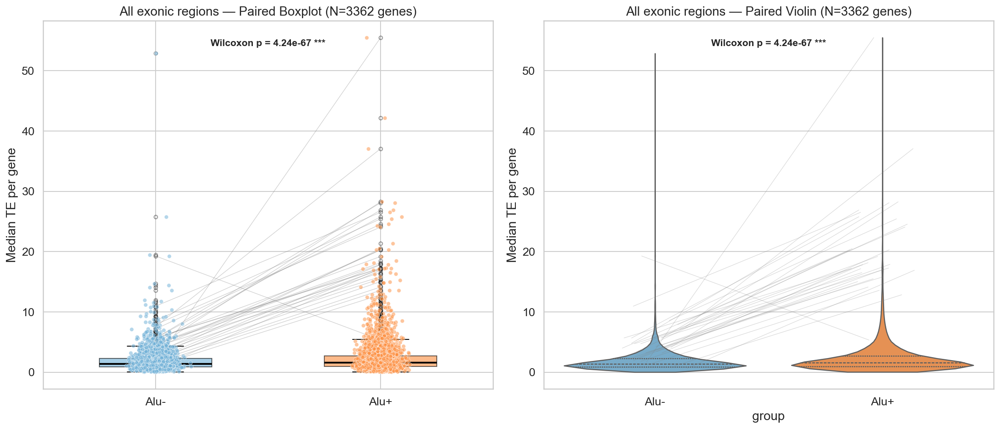
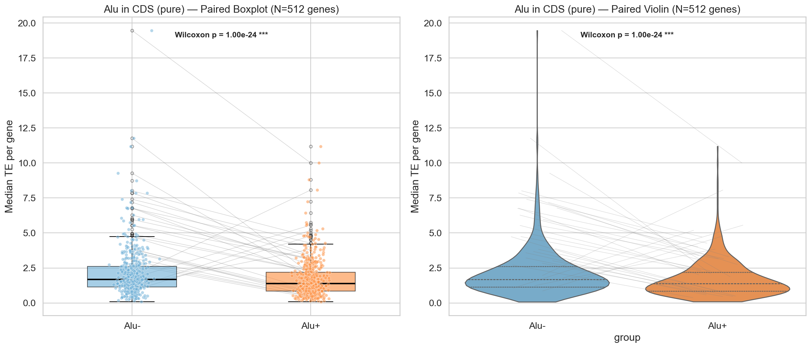
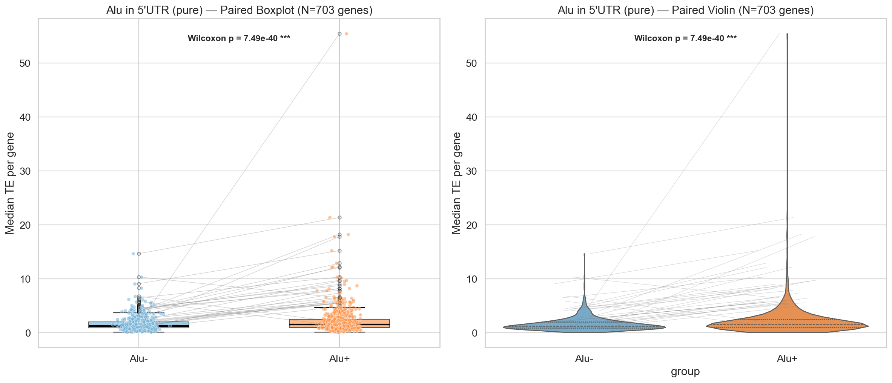
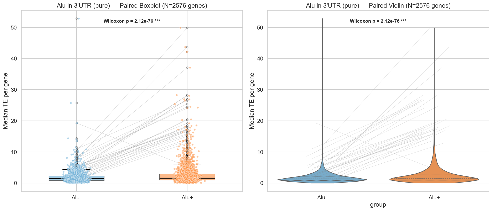
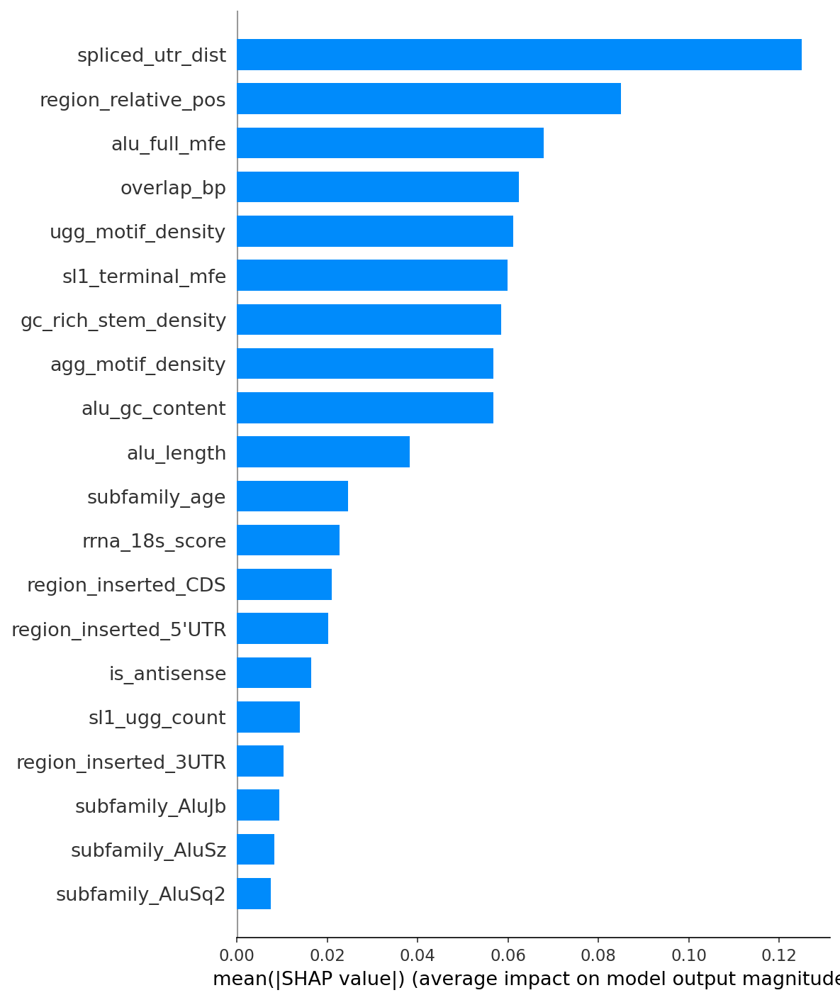
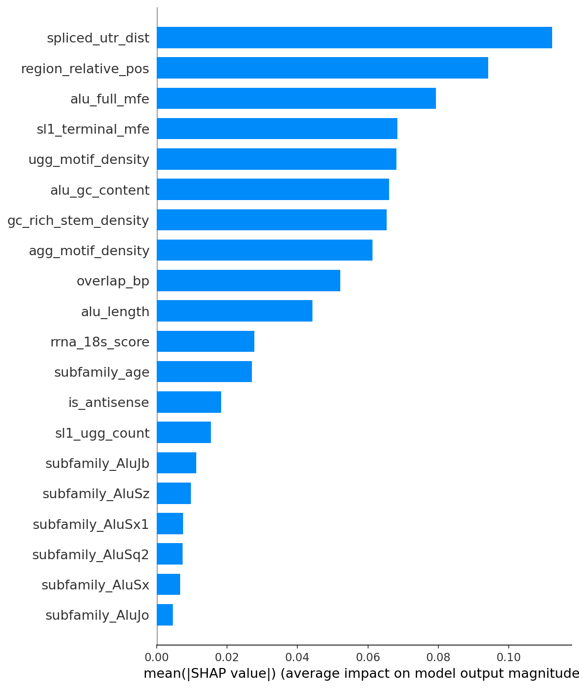
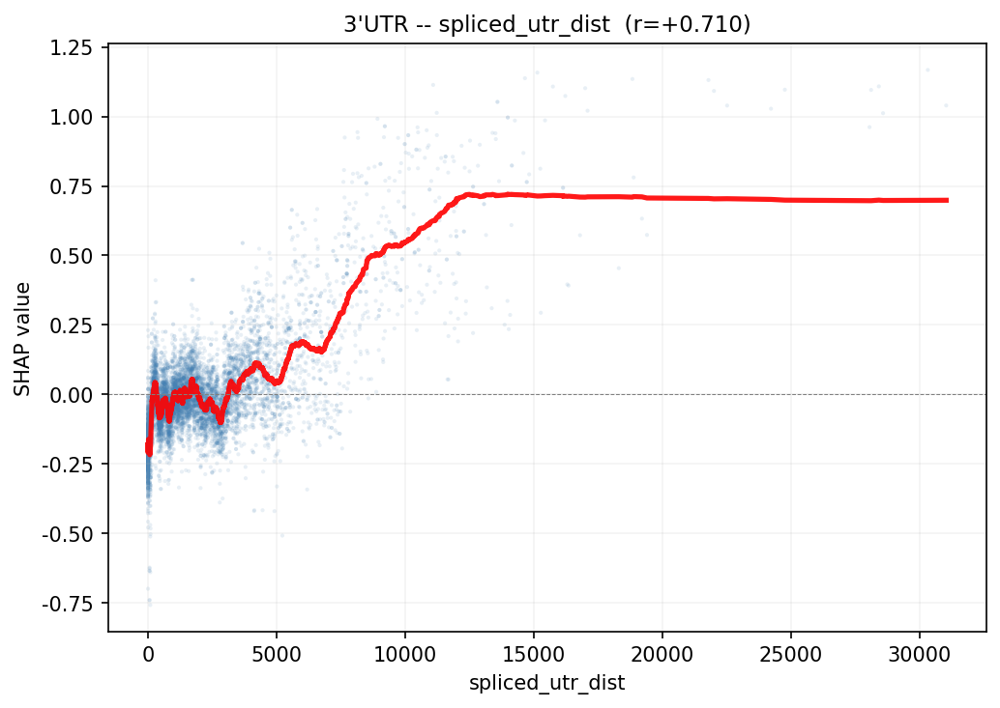
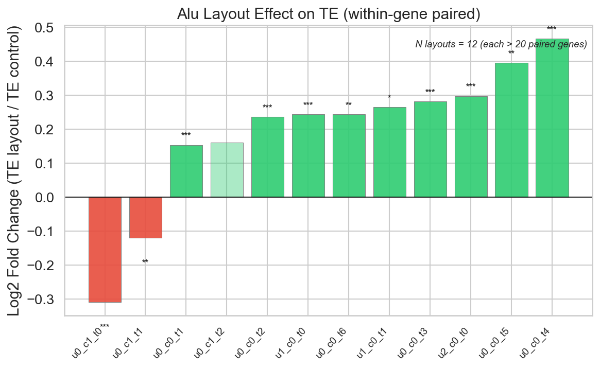

Course Thesis · Peking University
The Impact of Alu Element Localization on Translational Efficiency:
A Machine Learning and SHAP-Based Analysis
Alu 元件是人类基因组中丰度最高的转座元件。本研究利用 GENCODE v49、RepeatMasker 和 HEK293T TEDD 翻译效率数据，通过配对统计检验、XGBoost 回归和 SHAP 可解释性分析，系统评估了 Alu 元件在 mRNA 不同区域（5'UTR、CDS、3'UTR）对翻译效率的影响。配对分析（3,362 个基因对）显示 Alu 插入 CDS 抑制翻译（l2fc = −0.295），插入 UTR 促进翻译（l2fc = +0.244 / +0.200）。SHAP 分析揭示精细定位和二级结构稳定性是翻译效率的核心预测因子。
Alu elements are the most abundant transposable elements in the human genome. Leveraging GENCODE v49 annotations, RepeatMasker coordinates, and HEK293T TEDD translatome data, we systematically evaluate the position-dependent regulatory effects of Alu elements across mRNA regions using paired statistical tests, XGBoost regression, and SHAP analysis. Paired analysis (3,362 gene pairs) reveals CDS insertion suppresses translation (l2fc = −0.295), while UTR insertions enhance it (l2fc = +0.244 / +0.200). SHAP identifies fine positioning and secondary structure stability as core predictors of TE.
Alu 元件对翻译效率的影响具有明确的区域依赖性：CDS 插入与翻译抑制相关，而 5'UTR 和 3'UTR 插入则与翻译促进相关。
| Region | Pairs | l2fc | p-value | Direction |
|---|---|---|---|---|
| All exonic | 3,362 | +0.162 | 4.2 × 10⁻⁶⁷ | Enhance |
| CDS | 512 | −0.295 | 1.0 × 10⁻²⁴ | Suppress |
| 5'UTR | 703 | +0.244 | 7.5 × 10⁻⁴⁰ | Enhance |
| 3'UTR | 2,576 | +0.200 | 2.1 × 10⁻⁷⁶ | Enhance |
3'UTR 内 Alu 元件数量从 1 递增至 4 的过程中，翻译促进效应呈单调递增（l2fc: +0.15 → +0.47），支持 Alu 对翻译效率的直接调控作用。
在全区域和 3'UTR 亚组模型中，Alu 在转录本内的精细定位（spliced_utr_dist, region_relative_pos）和二级结构稳定性（alu_full_mfe）是最重要的预测因子。

Fig 1. Paired TE comparison: Alu+ vs Alu- transcripts across all regions.

Fig 2. CDS: Alu insertion suppresses TE (l2fc = −0.295).

Fig 3. 5'UTR: Alu insertion enhances TE (l2fc = +0.244).

Fig 4. 3'UTR: Alu insertion enhances TE (l2fc = +0.200).

Fig 5. SHAP feature importance — full region model.

Fig 6. SHAP feature importance — 3'UTR model.

Fig 7. SHAP dependence: spliced_utr_dist (top feature).

Fig 8. Layout fingerprint analysis: l2fc by Alu configuration.
GENCODE v49, RepeatMasker Alu (hg38), TEDD #00137 (HEK293T)
Position, motif, GC content, RNA secondary structure (MFE via RNAfold)
Within-gene Wilcoxon signed-rank test, Benjamini-Hochberg correction
XGBoost regression, 5-fold CV, RandomizedSearchCV hyperparameter tuning
SHAP TreeExplainer: global importance + dependence plots
| Data | Source | Version |
|---|---|---|
| Transcriptome annotation | GENCODE | v49 (human) |
| Alu repeat coordinates | RepeatMasker | hg38 |
| Translational efficiency | TEDD Database | #00137, HEK293T |
| Genome sequence | UCSC | hg38.2bit |
All Python scripts, analysis results, and figures are available on GitHub.
github.com/yukiii-rat/python-and-health-homework@misc{gao2025alu,
author = {Gao, Dengrong},
title = {基于机器学习与SHAP探究Alu元件在mRNA不同区域对翻译效率的影响},
year = {2025},
school = {Peking University}
}